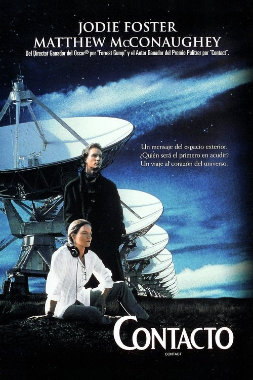

Contact (1997)
Sinopsis Rápida
¿Qué pasaría si recibiéramos una señal de una civilización extraterrestre? Una astrónoma brillante se embarca en una odisea que desafía las leyes de la física y las creencias humanas.
Sinopsis Detallada
Basada en la novela de Carl Sagan, Contact sigue a Ellie Arroway, una científica que dedica su vida a la búsqueda de vida extraterrestre. Cuando recibe una señal de un sistema estelar lejano, su descubrimiento cambia el rumbo de la humanidad, provocando debates científicos, religiosos y políticos sobre el contacto con seres inteligentes más allá de la Tierra. La película explora temas de fe, razón, la inmensidad del universo y la naturaleza de la existencia humana con una narrativa emocionante y reflexiva, dejando al espectador con profundas preguntas sobre nuestro lugar en el cosmos.
¿Por qué tenés que verla?
- Una exploración profunda y conmovedora de la búsqueda del significado en un universo vasto e incierto.
- La icónica banda sonora de Alan Silvestri crea una atmósfera inolvidable y acompaña magistralmente la emotiva narrativa.
- Contact ha dejado un legado perdurable en la cultura popular, inspirando debates sobre la posibilidad de vida extraterrestre y el impacto de un primer contacto.
- Una película que combina ciencia, filosofía y emoción de forma magistral.
Idea Extra
Análisis del simbolismo religioso y científico en Contact: un estudio comparativo entre la visión de Carl Sagan y la representación cinematográfica.